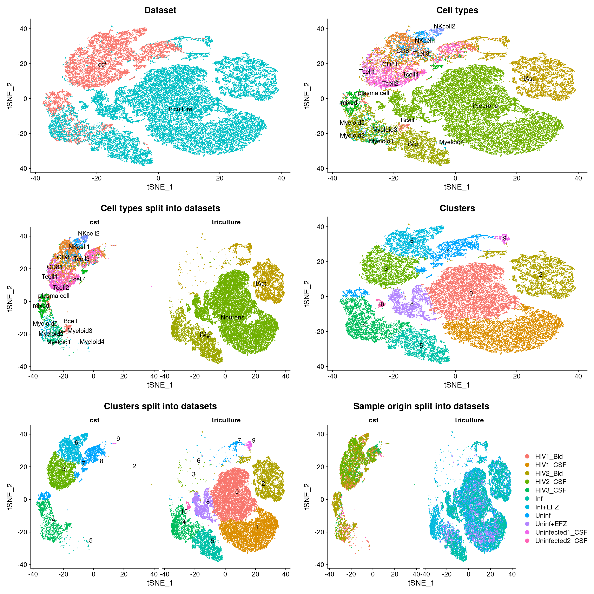
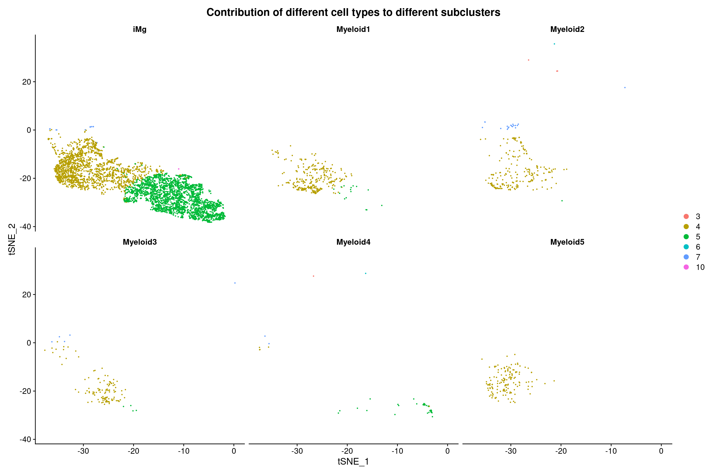
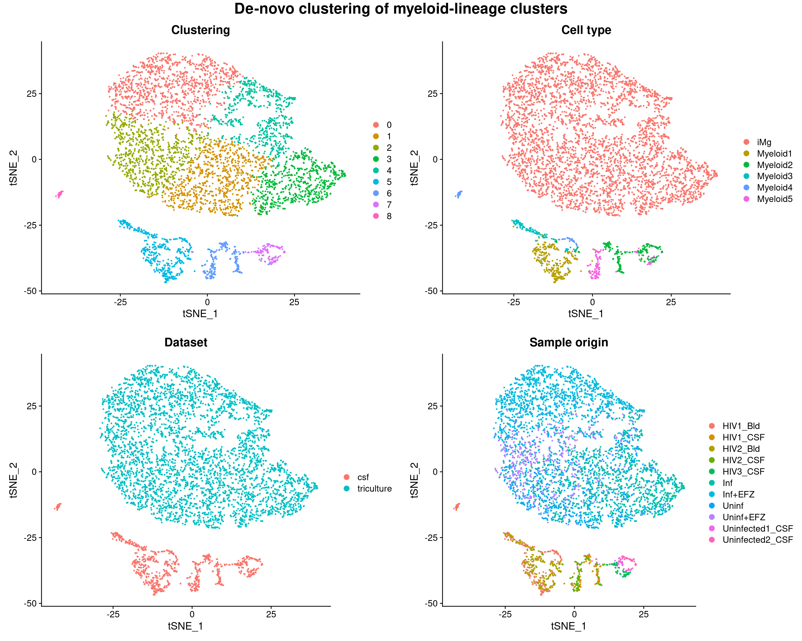
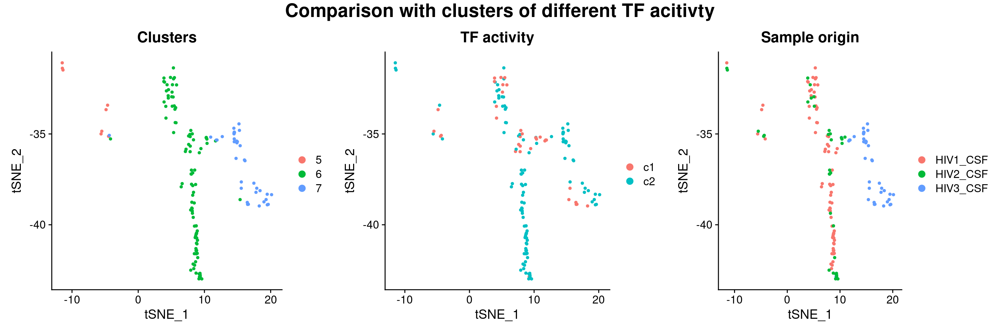
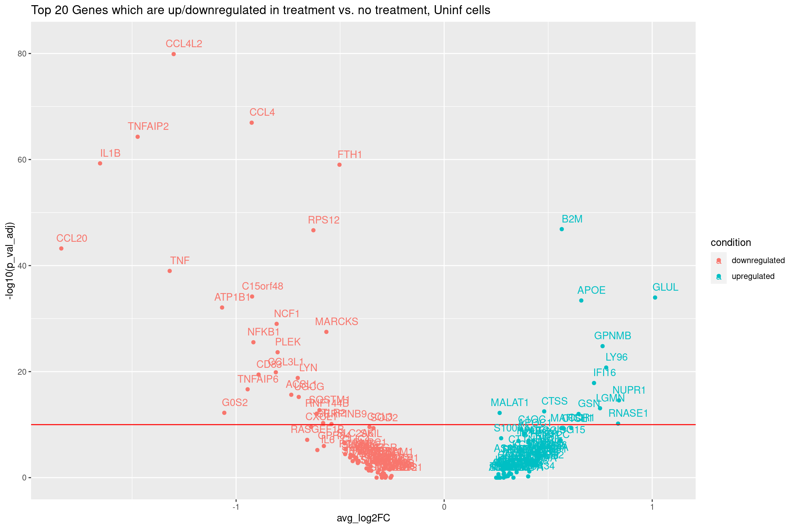
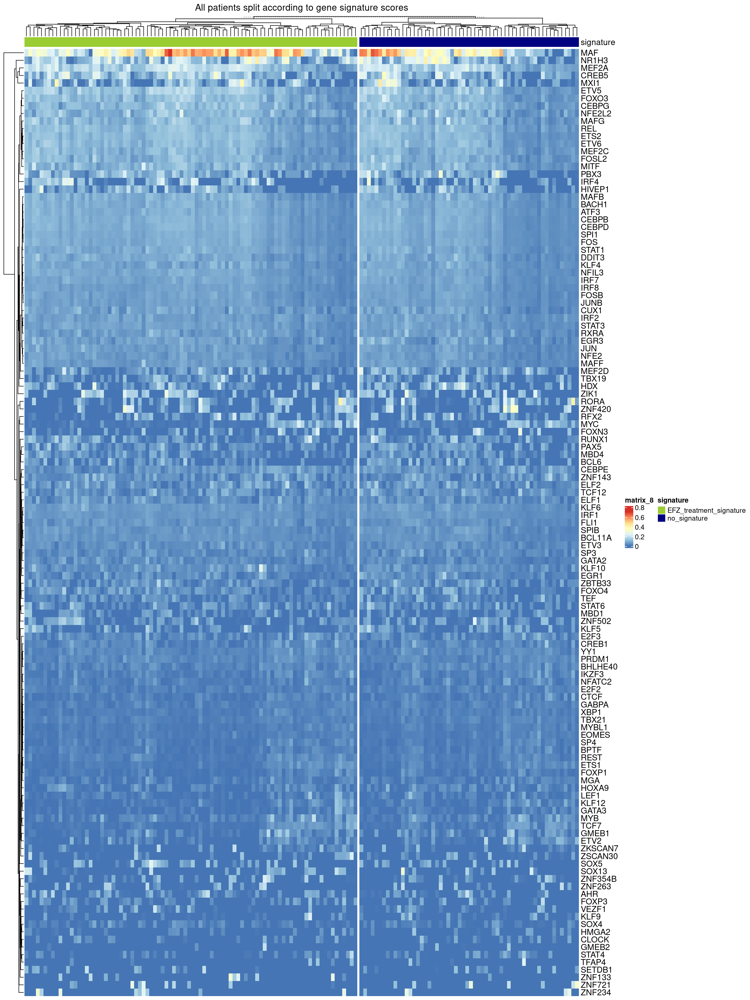

Triculture dataset
Katharina Mikulik
Last updated: 2021-12-28
Checks: 5 2
Knit directory: report/
This reproducible R Markdown analysis was created with workflowr (version 1.6.2). The Checks tab describes the reproducibility checks that were applied when the results were created. The Past versions tab lists the development history.
The R Markdown file has unstaged changes. To know which version of the R Markdown file created these results, you’ll want to first commit it to the Git repo. If you’re still working on the analysis, you can ignore this warning. When you’re finished, you can run wflow_publish to commit the R Markdown file and build the HTML.
Great job! The global environment was empty. Objects defined in the global environment can affect the analysis in your R Markdown file in unknown ways. For reproduciblity it’s best to always run the code in an empty environment.
The command set.seed(20211203) was run prior to running the code in the R Markdown file. Setting a seed ensures that any results that rely on randomness, e.g. subsampling or permutations, are reproducible.
Great job! Recording the operating system, R version, and package versions is critical for reproducibility.
- session-info-chunk-inserted-by-workflowr
- unnamed-chunk-1
- unnamed-chunk-10
- unnamed-chunk-11
- unnamed-chunk-12
- unnamed-chunk-13
- unnamed-chunk-14
- unnamed-chunk-15
- unnamed-chunk-16
- unnamed-chunk-17
- unnamed-chunk-18
- unnamed-chunk-19
- unnamed-chunk-2
- unnamed-chunk-20
- unnamed-chunk-21
- unnamed-chunk-22
- unnamed-chunk-23
- unnamed-chunk-24
- unnamed-chunk-25
- unnamed-chunk-26
- unnamed-chunk-27
- unnamed-chunk-28
- unnamed-chunk-29
- unnamed-chunk-3
- unnamed-chunk-30
- unnamed-chunk-31
- unnamed-chunk-32
- unnamed-chunk-33
- unnamed-chunk-34
- unnamed-chunk-35
- unnamed-chunk-36
- unnamed-chunk-37
- unnamed-chunk-38
- unnamed-chunk-39
- unnamed-chunk-4
- unnamed-chunk-40
- unnamed-chunk-41
- unnamed-chunk-42
- unnamed-chunk-43
- unnamed-chunk-44
- unnamed-chunk-45
- unnamed-chunk-46
- unnamed-chunk-47
- unnamed-chunk-48
- unnamed-chunk-49
- unnamed-chunk-5
- unnamed-chunk-50
- unnamed-chunk-51
- unnamed-chunk-52
- unnamed-chunk-53
- unnamed-chunk-54
- unnamed-chunk-55
- unnamed-chunk-56
- unnamed-chunk-57
- unnamed-chunk-58
- unnamed-chunk-6
- unnamed-chunk-7
- unnamed-chunk-8
- unnamed-chunk-9
To ensure reproducibility of the results, delete the cache directory Triculture_dataset_analysis_and_integration_Farhadian_dataset_cache and re-run the analysis. To have workflowr automatically delete the cache directory prior to building the file, set delete_cache = TRUE when running wflow_build() or wflow_publish().
Great job! Using relative paths to the files within your workflowr project makes it easier to run your code on other machines.
Great! You are using Git for version control. Tracking code development and connecting the code version to the results is critical for reproducibility.
The results in this page were generated with repository version 6c5f3b1. See the Past versions tab to see a history of the changes made to the R Markdown and HTML files.
Note that you need to be careful to ensure that all relevant files for the analysis have been committed to Git prior to generating the results (you can use wflow_publish or wflow_git_commit). workflowr only checks the R Markdown file, but you know if there are other scripts or data files that it depends on. Below is the status of the Git repository when the results were generated:
Ignored files:
Ignored: analysis/Independent_cell_type_identification_Farhadian_dataset_cache/
Ignored: analysis/Triculture_dataset_analysis_and_integration_Farhadian_dataset_cache/
Untracked files:
Untracked: README.html
Unstaged changes:
Modified: analysis/HIV_CSF_dataset_analysis.Rmd
Modified: analysis/Methods.Rmd
Modified: analysis/TF_activity_analysis_of_myeloid2_cluster.Rmd
Modified: analysis/Triculture_dataset_GRN_with_Scenic.Rmd
Modified: analysis/Triculture_dataset_analysis_and_integration_Farhadian_dataset.Rmd
Note that any generated files, e.g. HTML, png, CSS, etc., are not included in this status report because it is ok for generated content to have uncommitted changes.
These are the previous versions of the repository in which changes were made to the R Markdown (analysis/Triculture_dataset_analysis_and_integration_Farhadian_dataset.Rmd) and HTML (docs/Triculture_dataset_analysis_and_integration_Farhadian_dataset.html) files. If you’ve configured a remote Git repository (see ?wflow_git_remote), click on the hyperlinks in the table below to view the files as they were in that past version.
| File | Version | Author | Date | Message |
|---|---|---|---|---|
| html | 6c5f3b1 | Katharina782 | 2021-12-27 | Build site. |
| Rmd | d2f59b2 | Katharina782 | 2021-12-27 | wflow_publish(all = TRUE, republish = TRUE, delete_cache = TRUE) |
| html | d2f59b2 | Katharina782 | 2021-12-27 | wflow_publish(all = TRUE, republish = TRUE, delete_cache = TRUE) |
| html | d85a631 | Katharina782 | 2021-12-22 | Build site. |
| Rmd | fdf25ce | Katharina782 | 2021-12-22 | wflow_publish(all = TRUE, republish = TRUE, delete_cache = TRUE) |
| html | fdf25ce | Katharina782 | 2021-12-22 | wflow_publish(all = TRUE, republish = TRUE, delete_cache = TRUE) |
| html | 22c8da8 | Katharina782 | 2021-12-21 | Build site. |
| Rmd | b5ca15a | Katharina782 | 2021-12-21 | wflow_publish(c(“analysis/HIV_CSF_dataset_analysis.Rmd,” “analysis/Triculture_dataset_analysis_and_integration_Farhadian_dataset.Rmd”), |
| Rmd | 4b6fc54 | Katharina782 | 2021-12-21 | updates |
| html | 9597c36 | Katharina782 | 2021-12-21 | Build site. |
| html | 40651d9 | Katharina782 | 2021-12-20 | Build site. |
| html | 436b5c2 | Katharina782 | 2021-12-20 | Build site. |
| Rmd | f7243f8 | Katharina782 | 2021-12-20 | wflow_publish(all = TRUE, republish = TRUE, delete_cache = TRUE) |
| html | f7243f8 | Katharina782 | 2021-12-20 | wflow_publish(all = TRUE, republish = TRUE, delete_cache = TRUE) |
| html | f7843b5 | Katharina782 | 2021-12-20 | Build site. |
| Rmd | db265f0 | Katharina782 | 2021-12-20 | wflow_publish(“analysis/Triculture_dataset_analysis_and_integration_Farhadian_dataset.Rmd”) |
| html | a5b39dc | Katharina782 | 2021-12-18 | Build site. |
| html | 8979e1a | Katharina782 | 2021-12-17 | Build site. |
| Rmd | cfbba70 | Katharina782 | 2021-12-17 | wflow_publish(files = rmd) |
| Rmd | e87fa96 | Katharina782 | 2021-12-16 | new files |
| Rmd | dde1097 | Katharina782 | 2021-12-10 | recent updates |
knitr::opts_chunk$set(echo = TRUE, collapse = TRUE, message = FALSE,
cache = TRUE, cache.lazy = FALSE, autodep = TRUE)
set.seed(42) # TODO: check with default seedlibrary(tidyverse)
library(Seurat)
library(edgeR)
library(Matrix)
library(data.table)
library(ggrepel)
#library(harmony)
library(RColorBrewer)
library(pheatmap)
library(ggcorrplot)
library(ComplexHeatmap)
library(circlize)
library(ggpubr)
library(gridExtra)
library(corrplot)
library(rstatix)
library(knitr)
library(metap)
library(multtest)
library(readxl)Triculture Dataset
The triculture dataset used was published by (Ryan SK 2020). They used a Triculture system with induced neurons, induced astrocytes and induced microglia. Induced microglia express marker genes CX3CR1, IBA1, TMEM119 and P2RY12. CCR5 which is a co-receptor necessary for HIV infection is also expressed by these cells, but they lack expression of myeloid-progenitor markers (Ryan SK 2020).
iMg were infected with HIV for 15 days (resulting in 94% of cells infected, positive for HIV capsid protein p24 and exhibiting multinucleation). Some cells were treated with the ART EFZ. EFZ blocks HIV reverse transcription. This way it was possible to study non-productively infected cells. EFZ reduced infection by two thirds (Ryan SK 2020).
In the infected, but not treated iMg (Inf) inflammatory pathways were significantly uperegulated compared to the uninfected condition(Uninf), including IL-8, NFkB and EIF2. There was decreased expression of pro-imflammatory genes IL1b, Il8 and TNFalpha in the infected and treated (Inf+EFZ) vs Inf condition. This suggests a reduced inflammatory reaction (Ryan SK 2020). Nevertheless, there were two distinct pathways which were upregulated in Inf+EFZ iMg, namely RhoGDI signaling and CD40 signaling pathway. This will be discussed in more detail later on (Ryan SK 2020).
There was a change in signaling pathways caused by EFZ treatment even in the uninfected and treated (Uninf+EFZ) versus the uninfected, but not treated (Uninf) condition. The EFZ treatment alone was very different from the EFZ treatment with infection (Ryan SK 2020).
Files and data structure
Read in Files:
abbreviations:
- ia/2 = infected with HIV + treated with ART
- ca = uninfected + ART
- ctl = uninfected
- inf = infected
file structure:
- the “.mtx” files contains a sparse matrix of class dgTMatrix
- the “barcodes.tsv” files contain the cell barcodes
- the “features.tsv” files contain the feature names as well as ensemble gene ids and “gene expression” strings in a third column
There are duplicated features in the data. How do you deal with this problem? (probably, because there are multiple ensemble gene IDs mapping to the same gene symbol -> the same gene symbol has multiple expression values)
- You could make them unique with the function
make.unique() - You could remove the duplicated features -> this is what I did
path <- "/media/ag-cherrmann/kmikulik/HIV_microglia/data/GSE143686_RAW/" #"/media/ag-cherrmann/kmikulik/HIV_microglia/data/GSE143686_RAW/"
all_files <- list.files(path)
all_cond_list <- map(seq.int(3,7), function(n){
file <- all_files[grepl(paste0("GSM427258", n), all_files)]
name <- str_extract(file[[1]],"ca|ctl|ia2|ia|inf")
barcodes <- read.table(paste0(path,file[[1]]), sep = "\t")
features <- read.table(paste0(path, file[[2]]), sep = "\t")
matrix <- readMM(paste0(path, file[[3]]))
colnames(matrix) <- barcodes$V1
rownames(matrix) <- features$V2
matrix <- matrix[!duplicated(rownames(matrix)),]
seurat_ob <- CreateSeuratObject(matrix, project = name,
assay = "RNA", min.cells = 1, min.features = 1)
seurat_ob[["percent_mt"]] <- PercentageFeatureSet(seurat_ob, pattern = "^MT-")
list(name = name, count = matrix, seurat_ob = seurat_ob)
})
#saveRDS(all_cond_list, "/media/ag-cherrmann/kmikulik/HIV_microglia/src/Triculture_dataset_Ryan_paper/seurat_list")Data processing
Before Quality Control:
all_cond_list <- readRDS("/media/ag-cherrmann/kmikulik/HIV_microglia/src/Triculture_dataset_Ryan_paper/seurat_list")
before_qc <- merge(all_cond_list[[1]]$seurat_ob,
c(all_cond_list[[2]]$seurat_ob,
all_cond_list[[3]]$seurat_ob,
all_cond_list[[4]]$seurat_ob,
all_cond_list[[5]]$seurat_ob),
project = "triculture_all_conditions",
add.cell.ids = c(paste0(all_cond_list[[1]]$name),
paste0(all_cond_list[[2]]$name),
paste0(all_cond_list[[3]]$name),
paste0(all_cond_list[[4]]$name),
paste0(all_cond_list[[5]]$name)))qual_metric <- c("nFeature_RNA", "nCount_RNA", "percent_mt")
plots <- map(qual_metric, function(metric){
ggplot() +
geom_violin(aes(x = before_qc@meta.data %>% pull("orig.ident"),
y = before_qc@meta.data %>% pull(metric),
fill = before_qc@meta.data %>% pull("orig.ident")),
alpha = .5) +
geom_boxplot(aes(x = before_qc@meta.data %>% pull("orig.ident"),
y = before_qc@meta.data %>% pull(metric)),
alpha = 0) +
xlab("sample origin") +
ylab(paste0(metric)) +
NoLegend()
})
do.call(grid.arrange, c(plots, ncol = 3, nrow = 1))
After quality control
For each sample separately
- remove genes expressing less than 200 genes or more than 5000
- remove cells expressing more than 20% mitochondrial genes
- merge Seurat objects after Quality Control
# add percentage of mitochondiral genes to metadata
all_cond <- map(seq.int(1,5), function(n){
seurat_ob <- all_cond_list[[n]]$seurat_ob
#seurat_ob[["percent_mt"]] <- PercentageFeatureSet(seurat_ob, pattern = "^MT-")
#plot <- VlnPlot(seurat_ob,
# features = c("nFeature_RNA", "percent_mt", "nCount_RNA"),
# ncol = 3) +
#labs(title = paste0("condition ", all_cond_list[[n]]$name))
seurat_ob <- subset(seurat_ob, nFeature_RNA > 200 & nFeature_RNA < 5000 & percent_mt < 20)
list(name = all_cond_list[[n]]$name, seurat_ob = seurat_ob)#, plot = plot)
})triculture <- merge(all_cond[[1]]$seurat_ob,
c(all_cond[[2]]$seurat_ob,
all_cond[[3]]$seurat_ob,
all_cond[[4]]$seurat_ob,
all_cond[[5]]$seurat_ob),
project = "triculture_all_conditions",
add.cell.ids = c(paste0(all_cond[[1]]$name),
paste0(all_cond[[2]]$name),
paste0(all_cond[[3]]$name),
paste0(all_cond[[4]]$name),
paste0(all_cond[[5]]$name)))qual_metric <- c("nFeature_RNA", "nCount_RNA", "percent_mt")
plots <- map(qual_metric, function(metric){
ggplot() +
geom_violin(aes(x = triculture@meta.data %>% pull("orig.ident"),
y = triculture@meta.data %>% pull(metric),
fill = triculture@meta.data %>% pull("orig.ident")),
alpha = .5) +
geom_boxplot(aes(x = triculture@meta.data %>% pull("orig.ident"),
y = triculture@meta.data %>% pull(metric)),
alpha = 0) +
xlab("sample origin") +
ylab(paste0(metric)) +
NoLegend()
})
do.call(grid.arrange, c(plots, ncol = 3, nrow = 1))
Normalization, Scaling, Find Variable Features
- log normalization
- scale data so that we have mean = 0 and variance = 1
- Find the 2000 most highly variable features
triculture <- NormalizeData(triculture, verbose = FALSE)
triculture <- ScaleData(triculture, verbose = FALSE)
triculture <- FindVariableFeatures(triculture, verbose = FALSE)Dimensionality reduction
- compute PCA
- use elbow plot to determine dimensions that contribute to variability
- find the k-nearest neighbors
- find Clusters based on KNN-graph
- calculate TSNE embedding
triculture <- RunPCA(triculture, features = VariableFeatures(triculture), verbose = FALSE)
ElbowPlot(triculture)
triculture <- FindNeighbors(triculture, verbose = FALSE)
triculture <- FindClusters(triculture, verbose = FALSE)
triculture <- RunTSNE(triculture, dims = 1:10, verbose = FALSE)triculture <- readRDS("seurat_objects/triculture_seurat_object")
#triculture <- readRDS("/media/ag-cherrmann/kmikulik/HIV_microglia/src/Triculture_dataset_Ryan_paper/triculture_seurat_object")
DimPlot(triculture, reduction = "tsne", pt.size = .01,label = TRUE,
group.by = "seurat_clusters")
Cell type annotation
For annotating the different clusters the same markers as in (Ryan SK 2020) were used:
- Microglia: AIF1, SPI1, CD4
- Astrocytes: SOX9, THBS1
- Neurons: SYN1, MAP2
#markers <- FindAllMarkers(triculture)
#triculture <- readRDS("/media/ag-cherrmann/kmikulik/HIV_microglia/src/Triculture_dataset_Ryan_paper/triculture_seurat_object")
markers <- read.table("data_files/marker_genes_triculture_dataset")
#markers <- read.table("/media/ag-cherrmann/kmikulik/HIV_microglia/data/marker_genes_triculture_dataset")
top_2 <- markers %>% group_by("seurat_cluster") %>% top_n(n = 2, wt = avg_log2FC)
marker_genes <- c("AIF1", "SPI1", "CD4", "MAP2", "SYN1", "THBS1", "SOX9")
p1 <- FeaturePlot(triculture, features = "AIF1")
p2 <- FeaturePlot(triculture, features = "SPI1")
p3 <- FeaturePlot(triculture, features = "CD4")
p4 <- FeaturePlot(triculture, features = "MAP2")
p5 <- FeaturePlot(triculture, features = "SYN1")
p6 <- FeaturePlot(triculture, features = "THBS1")
p7 <- FeaturePlot(triculture, features = "SOX9")
ggarrange(p1,p2,p3,p4,p5,p6,p7, ncol = 2, nrow =4 )
Details on cell type annotation
Gene expression
Different clusters were annotated according to the gene expression of marker genes mentioned above.
VlnPlot(triculture, features = c("CD4", "SPI1", "AIF1"), group.by = "seurat_clusters")#, group.by = seurat_cluster)
VlnPlot(triculture, features = c("MAP2", "SYN1"), group.by = "seurat_clusters")
VlnPlot(triculture, features = c("THBS1", "SOX9"), group.by = "seurat_clusters")
# 4, 9, 11, 18 = Microglia
# 0, 1, 2, 3,8, 10, 13, 15, 18, 19 = Neurons
# 6, 7, 12, 14, 16 = Astrocytes
# 5, 17 are undesginated
cell_types <- (triculture@meta.data %>%
mutate(cell_type = ifelse(seurat_clusters %in% c(4,9,11), "iMg",
ifelse(seurat_clusters %in% c(6,7,12,14,16), "iAst",
ifelse(seurat_clusters %in%
c(0,1,2,3,8,10,13,15,18,19),
"iNeurons", "Undesignated")))))[["cell_type"]]
triculture <- AddMetaData(triculture, cell_types, col.name = "cell_type")Exploring the dataset
Remove undesignated cells
There is one group of cells where it is not clear which cell state they represent (Undesignated), we will exclude them from further analysis as (Ryan SK 2020) did.
p1 <- DimPlot(triculture, reduction = "tsne", pt.size = .01, label = TRUE,
group.by = "cell_type")triculture_clean <- subset(triculture, cell_type %in% c("iMg", "iNeurons", "iAst")) p2 <- DimPlot(triculture_clean, reduction = "tsne", pt.size = .01, label = TRUE,
group.by = "cell_type")p1+p2
Heatmap of top 20 marker genes for each cell type
Top20 marker genes for each cell cell type:
Idents(triculture_clean) <- "cell_type"
top_n <- markers %>% group_by (cluster) %>% top_n(n = 20, wt = avg_log2FC)
DoHeatmap(triculture_clean, features = top_n$gene)
Number of cells per condition and cell type
How many cells of each cell type and condition are present in the dataset?
triculture_clean@meta.data %>% group_by(cell_type, orig.ident) %>%
summarize(n = n()) %>%
mutate(orig.ident = case_when(
orig.ident %in% c("ia", "ia2") ~ "Inf+EFZ",
orig.ident == "ca" ~ "Uninf",
orig.ident == "ctl" ~ "Uninf+EFZ",
orig.ident == "inf" ~ "Inf")) %>%
pivot_wider(names_from = orig.ident, values_from = n) %>%
kable(caption = "Number of cells per condition and cell type") # to make table look nice in Rmarkdown
Warning: Values are not uniquely identified; output will contain list-cols.
* Use `values_fn = list` to suppress this warning.
* Use `values_fn = length` to identify where the duplicates arise
* Use `values_fn = {summary_fun}` to summarise duplicates| cell_type | Uninf | Uninf+EFZ | Inf+EFZ | Inf |
|---|---|---|---|---|
| iAst | 1481 | 686 | 878, 944 | 1269 |
| iMg | 1163 | 722 | 632, 750 | 1166 |
| iNeurons | 6733 | 4899 | 747, 2250 | 3964 |
Different infection and treatment conditions & gene expression
Interestingly, the infected cells treated with EFZ (Inf+EFZ) clearly separate from the infected, but untreated cells (Inf) and the the uninfected cells (Uninf, Uninf+EFZ) in the microglia cluster as can be seen in the figure below.
# rename origin of ident for easier interpretation
origin_vector <- (triculture_clean@meta.data %>%
mutate(orig.ident = case_when(
orig.ident %in% c("ia", "ia2") ~ "Inf+EFZ",
orig.ident == "ca" ~ "Uninf",
orig.ident == "ctl" ~ "Uninf+EFZ",
orig.ident == "inf" ~ "Inf")))[["orig.ident"]]
triculture_clean <- AddMetaData(triculture_clean, origin_vector, col.name = "orig.ident")DimPlot(triculture_clean, reduction = "tsne", group.by = "orig.ident", pt.size = .01, )
Inflammatory gene expression in iMg
Inflammatory gene expression in iMg
The largest change in gene expression related to inflammation was found in iMg among the 3 cell types (Ryan SK 2020). Shown are only inflammatory genes.
inflamm_genes <- c("TNF", "ACSL1", "MGST3", "B2M", "IFNGR2", "GRINA", "TLR2",
"SOD2", "GLUL", "CFLAR", "CTNNB1", "CXCL8", "CCL4", "IL1B",
"ATF4", "CXCL8", "CCL4", "CCL2", "IL1B", "ATF4", "CXCL1",
"NFKB1", "TANK", "APOE", "TREM2", "LY96", "SRC", "NCF1",
"HCK", "LYN", "VASP", "C3", "C5", "RAP1B", "RAP2B", "MAF",
"JUND", "SQSTM1", "FTH1", "RHOQ", "CD36", "FOS", "NFKBIA",
"ICAM1", "TNFAIP3", "LYZ", "PPP1R12A", "RND3", "CYBA", "IRF8",
"SLC25A6")
DoHeatmap(triculture_clean, features = inflamm_genes)
Differences of inflammatory gene expression between conditions
The gene expression of inflammatory genes in microglia was not very different between the conditions. The Inf+EFZ cells show a slightly different pattern of gene expression.
DoHeatmap(subset(triculture_clean, cell_type == "iMg"),
features = inflamm_genes, group.by = "orig.ident")
Integration triculture & CSF/Blood dataset
The HIV Blood & CSF dataset (Shelli F. Farhadian and Spudich 2018) used in the previous analysis was integrated with the triculture dataset (Ryan SK 2020).
Integration of two datasets is based on Seurat (Stuart T 2019). It first identifies anchors between datasets, calculates scores for all anchors and then calculates an integrated expression matrix which can be used for downstream analysis.
- Identify features which are variable across datasets
- Identify anchors between the two datasets and create an integrated data assay
- Run a single integrated analysis on all cells
Details on integration
For more details see: (Stuart T 2019)
- Identify features which are variable across datasets
- Identify anchors between the two datasets and create an integrated data assay
- Run a single integrated analysis on all cells
hiv7 <- readRDS("/media/ag-cherrmann/kmikulik/HIV_microglia/src/Reproduce_Farhadian_Paper/Seurat_objects/total_7_samples_label_transfer.rds")
hiv7 <- NormalizeData(hiv7, verbose = FALSE)
hiv7 <- FindVariableFeatures(hiv7, verbose = FALSE)
# add both datasets to a lits
data_list <- list(hiv = hiv7, triculture = triculture_clean)
# select features that are repeatedly variable across datasets for integration
features <- SelectIntegrationFeatures(object.list = data_list, verbose = FALSE)
# identify integration anchors and perform integration
anchors <- FindIntegrationAnchors(object.list = data_list,
anchor.features = features, verbose = FALSE)
combined <- IntegrateData(anchorset = anchors, verbose = FALSE)
# run analysis on integrated dataset
combined <- ScaleData(combined, verbose = FALSE)
combined <- RunPCA(combined, verbose = FALSE)
#ElbowPlot(combined)
combined <- RunTSNE(combined, reduction = "pca", dims = 1:10, verbose = FALSE)
combined <- FindNeighbors(combined, reduction = "pca", dims = 1:10, verbose = FALSE)
combined <- FindClusters(combined, resolution = .3, verbose = FALSE)
# add annotations from which dataset the sample came from
dataset_vector <- (combined@meta.data %>% mutate(dataset = ifelse(orig.ident %in%
c("HIV1_CSF", "HIV2_CSF",
"HIV3_CSF", "HIV1_Bld",
"HIV2_Bld", "Uninfected1_CSF",
"Uninfected2_CSF"),
"csf", "triculture")))[["dataset"]]
combined <- AddMetaData(combined, dataset_vector, col.name = "dataset")
# add information on the cell groups in the combined datasets
combined_clusters <- (combined@meta.data %>%
mutate(combined_clusters = ifelse(seurat_clusters %in% c(2,10), "Microglia",
ifelse(seurat_clusters %in% c(3,9), "iAst",
ifelse(seurat_clusters %in% c(0,1,7,11),
"iNeurons",
ifelse(seurat_clusters %in% c(8,5,6), "Immune Cells", "Undesignated"))))))[["combined_clusters"]]
combined <- AddMetaData(combined, combined_clusters, col.name = "combined_clusters")
#saveRDS(combined,"/media/ag-cherrmann/kmikulik/HIV_microglia/src/Triculture_dataset_Ryan_paper/triculture_hiv_combined_seurat_object")
Integrated clusters
When integrating the CSF dataset and the Triculture dataset the iMg cells clustered together with the Myeloid cells from the CSF and Blood samples from the HIV-1 infected/uninfected patients. This was expected since they are both myeloid-lineage cells. However, this makes it more difficult to draw conclusions on which of the five Myeloid clusters is the most microglia-like. Therefore, we had a closer look at this myeloid-lineage cluster consisting of iMg from triculture and Myeloid cells from CSF and Blood samples.
Visualization of the integrated dataset
combined = readRDS("seurat_objects/triculture_hiv_combined_seurat_object_2")
p1 <- DimPlot(combined, reduction = "tsne", group.by = "dataset",
label = TRUE) + NoLegend() +
labs(title = "Dataset")
p2 <- DimPlot(combined, reduction = "tsne", group.by = "cell_type",
label = TRUE, repel = TRUE) + NoLegend() +
labs(title = "Cell types")
p3 <- DimPlot(combined, reduction = "tsne", group.by = "cell_type",
split.by = "dataset", label = TRUE, repel = TRUE) + NoLegend() +
labs(title = "Cell types split into datasets")
p4 <- DimPlot(combined, reduction = "tsne", group.by = "seurat_clusters",
label = TRUE) + NoLegend() +
labs(title = "Clusters")
a1 <- DimPlot(combined, reduction = "tsne", split.by = "dataset",
group.by = "seurat_clusters", label = TRUE, repel =TRUE) +
NoLegend() +
labs(title = "Clusters split into datasets")
a2 <- DimPlot(combined, reduction = "tsne", split.by = "dataset",
group.by = "orig.ident") +
labs(title = "Sample origin split into datasets")
ggarrange(p1, p2, p3,p4, a1, a2, ncol = 2, nrow = 3)
Myeloid lineage cluster
Visualization of Myeloid lineage cluster (iMg, Myeloid1/2/3/4/5)
The plot below visualizes that iMg and CSF/Blood Myeloid cells cluster together, independent of their infection status.
subset_monocytes <- subset(combined, cell_type %in% c("Myeloid1",
"Myeloid2",
"Myeloid3",
"Myeloid4",
"Myeloid5",
"iMg"))
p1 <- DimPlot(subset_monocytes, group.by = "cell_type") +
labs(title = "Cell type")
p2 <- DimPlot(subset_monocytes, group.by = "orig.ident") +
labs(title = "Sample origin")
p3 <- DimPlot(subset_monocytes, group.by = "seurat_clusters") +
labs(title = "Cluster")
fig <- ggarrange(p1, p2, p3, ncol = 3, nrow = 1)
annotate_figure(fig, top = text_grob("Myeloid-lineage cells", size = 20))
As expected the CSF/Blood Myeloid cells cluster together with Inf+EFZ and mainly contribute to the same subcluster, as can be seen in the plot below, which shows only CSF/Blood Myeloid cells and the Inf+EFZ iMg. Blood Myeloid 4 is an exception and belongs to a different subcluster.
subset_infected <- subset(combined, orig.ident %in% c("HIV1_CSF", "HIV2_CSF", "HIV3_CSF",
"HIV1_Bld", "HIV2_Bld","Inf+EFZ") &
cell_type %in% c("Myeloid1",
"Myeloid2",
"Myeloid3",
"Myeloid4",
"Myeloid5",
"iMg"))
p1 <- DimPlot(subset_infected, group.by = "cell_type") +
labs(title = "Cell Type")
p2 <- DimPlot(subset_infected, group.by = "orig.ident") +
labs(title = "Sample origin")
p3 <- DimPlot(subset_infected, group.by = "seurat_clusters") +
labs(title = "Clusters")
fig <- ggarrange(p1, p2, p3, ncol = 3, nrow = 1)
annotate_figure(fig, top = text_grob("Infected CSF/Blood Myeloid cells & Inf+EFZ iMg"))
Cell types and conditions partially separate according to the two iMg clusters
The myeloid-lineage cluster separated into two distinct subclusters. Interestingly, the infected + EFZ iMg separated clearly from the infected iMg. The separation was not so clear for the uninfected cells, which contributed to both subclusters. Another observations is that the infected Myeloid1/2/3/5 cells belong
to the same subcluster as the infected + EFZ iMg. Conversely, the Myeloid4 cells cluster with the infected iMg. Since the infected CSF/Blood Myeloid cells originate from HIV infected and treated patients we would expect them to cluster togehter with the infected + EFZ iMg. However, there might also be infected CSF/Blood Myeloid cells which are not affected by the treatment. The Myeloid4 cells which are from Blood samples might consitute an infected cell population unaffected by the ART treatment.
DimPlot(subset_monocytes, group.by = "seurat_clusters",
split.by = "orig.ident", ncol = 4) +
labs(title = "Contribution of different samples to different subclusters")
DimPlot(subset_monocytes, group.by = "seurat_clusters",
split.by = "cell_type", ncol = 3) +
labs(title = "Contribution of different cell types to different subclusters")
De-nove clustering
De-novo clustering of the myeloid-lineage cluster of the integrated dataset was performed. Isolating the iMg and all Myeloid cell clusters from the integrated dataset and normalizing, scaling and re-clustering these isolated cells might
give us additional insights.
Details on de-novo clustering
microglia <- subset(combined, cell_type %in% c("iMg",
"Myeloid1",
"Myeloid2",
"Myeloid3",
"Myeloid4",
"Myeloid5"))
microglia_recluster <- SCTransform(microglia, verbose = FALSE)
microglia_recluster <- ScaleData(microglia_recluster, verbose = FALSE)
microglia_recluster <- RunPCA(microglia_recluster, verbose = FALSE)
ElbowPlot(microglia_recluster)
microglia_recluster <- RunTSNE(microglia_recluster, reduction = "pca", dims = 1:10)
microglia_recluster <- FindNeighbors(microglia_recluster)
microglia_recluster <- FindClusters(microglia_recluster, resolution = 0.5)It is no surprise that cells from the triculture dataset separate from the CSF/Blood-derived cells which can be seen in the plot below. When we recluster the myeloid lineage derived cells, we obtain five subclusters for the iMg and three subclusters for the five CSF/Blood Myeloid clusters as can be seen in the plots below. We can also observe that the Myeloid2 and Myeloid5 separate from Myeloid1/2/3 which is expected, since Myeloid2/5 originate from CSF samples and Myeloid1/3/4 originate from blood samples.
microglia_recluster <- readRDS("/media/ag-cherrmann/kmikulik/HIV_microglia/src/Triculture_dataset_Ryan_paper/microglia_myeloid_seurat_object_reclustering")
a1 <- DimPlot(microglia_recluster, reduction = "tsne",
group.by = "seurat_clusters", pt.size = .4) +
labs(title = "Clustering")
a2 <- DimPlot(microglia_recluster, reduction ="tsne",
group.by = "cell_type", pt.size = .4) +
labs(title = "Cell type")
a3 <- DimPlot(microglia_recluster, reduction ="tsne",
group.by = "dataset", pt.size = .4) +
labs(title = "Dataset")
a4 <- DimPlot(microglia_recluster, reduction = "tsne",
group.by = "orig.ident", pt.size = .4) +
labs(title = "Sample origin")
fig <- ggarrange(a1, a2, a3, a4, ncol = 2, nrow = 2)
annotate_figure(fig,
top = text_grob("De-novo clustering of myeloid-lineage clusters",
color = "black", face = "bold", size = 20))
Interestingly, both the Myeloid5 cells and the Myeloid2 cells are split between the cluster six (blue) and seven (purple) in the figure below. In the following we will have a closer look at this segregation.
When performing GRN inference with Scenic we also identified two potentially biologically relevant subclusters of the Myeloid2 cells. It could be that these independently found clusters correlate.
a5 <- DimPlot(microglia_recluster, reduction ="tsne",
split.by = "cell_type", pt.size = .4, ncol=3) +
labs(title = "Contribution of different cell types to different myeloid clusters")
a5
It looks like the two clusters identified this way correspond to different sample origins. CSF cells from patient1 (HIV1_CSF) and patient2 (HIV2_CSF) belong to cluster six,while CSF cells from patient3 (HIV3_CSF) and the two uninfected patients (Uninfected1_CSF, Uninfected2_CSF) belong to cluster seven. The separation of patient3 (HIV3_CSF) from patient1 (HIV1_CSF) and patient2 (HIV2_CSF) might correspond to a batch effect, or it might be a biological effect, because the infection affected the cells differently.
#a1 <- DimPlot(subset(microglia_recluster, cell_type == "iMg"), reduction = "tsne",
# group.by = "orig.ident", pt.size = .4)
a2 <- DimPlot(subset(microglia_recluster, cell_type != "iMg"), reduction = "tsne",
group.by = "orig.ident", pt.size = .4) +
labs(title = "Sample origin")
#a3 <- DimPlot(subset(microglia_recluster, cell_type == "iMg"), reduction = "tsne",
#group.by = "seurat_clusters", pt.size = .4)
a4 <- DimPlot(subset(microglia_recluster, cell_type != "iMg"), reduction = "tsne",
group.by = "seurat_clusters", pt.size = .4) +
labs(title = "Cluster")
fig <- ggarrange(a2, a4, ncol = 2, nrow = 1)
annotate_figure(fig, top = text_grob("CSF/Blood Myeloid cells",
face = "bold", size = 20))
Since the segregation into two clusters seems to be related to the sample origin rather than to the infection status, we would not expect the clusters to overlap with the clusters identified after GRN inference with SCENIC. In the figure below this is exactly what can be observed, only the Myeloid2 cells from infected CSF samples (HIV1_CSF, HIV2_CSF, HIV3_CSF) are shown.
# read in Myeloid2 cells
hivmy2 <- readRDS("data_files/hiv_myeloid2_subclusters")
my2 <- subset(microglia_recluster, cell_type == "Myeloid2" &
orig.ident %in% c("HIV1_CSF", "HIV2_CSF", "HIV3_CSF"))
my2 <- AddMetaData(my2, hivmy2@meta.data["ht_cluster"],
col.name = "TF_activity_clusters")
p1 <- DimPlot(my2, group.by = "seurat_clusters") +
labs(title="Clusters")
p2 <- DimPlot(my2, group.by = "TF_activity_clusters") +
labs(title = "TF activity")
p3 <- DimPlot(my2, group.by = "orig.ident") +
labs(title = "Sample origin")
figure <- ggarrange(p1, p2, p3, ncol = 3, nrow = 1)
annotate_figure(figure,
top = text_grob("Comparison with clusters of different TF acitivty",
color = "black", face = "bold", size = 20))
#my25 <- subset(microglia, seurat_clusters %in% c(6,7) &cell_type %in% c("Myeloid2", "Myeloid5"))For this reason the reclustering did not lead to any useful insights and will not be analyzed further.
Differential gene expression
Differential gene expression between infected and uninfected +/- EFZ iMg
In the following I will compare gene expression between infected cells and uninfected cells, both treated with EFZ and not treated. I will use the uninfected cells as a baseline to find genes which are upregulated or downregulated in infected cells compared to uninfected cells. Since we have both cells treated with EFZ and cells not treated with EFZ, we can define a signature for both treatment conditions separately and then see if there is an overlap between the gene signatures of infected cells +/- EFZ. Finding genes which overlap independently of treamtent condition increases the confidence in the results
List if top up- or downregulated genes in Inf+EFZ vs Uninf+EFZ
# isolate iMg cells
microglia <- subset(combined, cell_type == "iMg")
# only iMg cells to identify potential signatures between infected vs uninfected
Idents(microglia) = "orig.ident"
# find marker genes between Uninf+EFZ and Inf+EFZ
inf_uninf_art_marker <- FindMarkers(microglia, ident.1 = "Inf+EFZ",
ident.2 = "Uninf+EFZ", verbose = FALSE)
#upregulated genes
up_inf_art <- inf_uninf_art_marker %>%
arrange(desc(avg_log2FC)) %>%
head(10) %>%
rownames_to_column("gene")
up_inf_art %>% kable(caption = "Genes upregulated in Inf+EFZ vs. Uninf+EFZ")| gene | p_val | avg_log2FC | pct.1 | pct.2 | p_val_adj |
|---|---|---|---|---|---|
| RAB32 | 0 | 1.2840817 | 0.656 | 0.291 | 0 |
| NUPR1 | 0 | 1.0569999 | 0.680 | 0.460 | 0 |
| HMOX1 | 0 | 0.9031207 | 0.597 | 0.309 | 0 |
| PDK4 | 0 | 0.8673561 | 0.204 | 0.019 | 0 |
| SLC38A2 | 0 | 0.8452040 | 0.288 | 0.079 | 0 |
| LPAR6 | 0 | 0.8045929 | 0.579 | 0.289 | 0 |
| ID3 | 0 | 0.7434776 | 0.258 | 0.102 | 0 |
| CYP1B1 | 0 | 0.7204238 | 0.911 | 0.776 | 0 |
| ID2 | 0 | 0.7083962 | 0.501 | 0.259 | 0 |
| NEAT1 | 0 | 0.6849097 | 0.784 | 0.579 | 0 |
# downregulated genes
down_inf_art <- inf_uninf_art_marker %>%
arrange(avg_log2FC) %>%
head(10) %>%
rownames_to_column("gene")
down_inf_art %>% kable(caption = "Genes downregulated in Inf+EFZ vs. Uninf+EFZ")| gene | p_val | avg_log2FC | pct.1 | pct.2 | p_val_adj |
|---|---|---|---|---|---|
| MT1X | 0 | -3.413896 | 0.147 | 0.735 | 0 |
| MT2A | 0 | -3.113559 | 0.167 | 0.695 | 0 |
| CCL4 | 0 | -3.102918 | 0.321 | 0.910 | 0 |
| CCL4L2 | 0 | -2.676517 | 0.235 | 0.816 | 0 |
| CCL3L1 | 0 | -2.579091 | 0.290 | 0.807 | 0 |
| CCL3 | 0 | -2.560332 | 0.611 | 0.982 | 0 |
| IL1B | 0 | -2.405276 | 0.090 | 0.530 | 0 |
| CXCL1 | 0 | -2.335406 | 0.244 | 0.734 | 0 |
| MT1G | 0 | -1.926247 | 0.025 | 0.177 | 0 |
| MT1E | 0 | -1.822557 | 0.016 | 0.234 | 0 |
# find marker genes between Inf and Uninf
inf_uninf_marker <- FindMarkers(microglia, ident.1 = "Inf",
ident.2 = "Uninf", verbose = FALSE)
# upregulated in Inf vs Uninf, no treatment
up_inf_no <- inf_uninf_marker %>%
arrange(desc(avg_log2FC)) %>%
head(20) %>%
rownames_to_column("gene")
#up_inf_no %>% kable()
down_inf_no<- inf_uninf_marker %>%
arrange(avg_log2FC) %>%
head(20) %>%
rownames_to_column("gene")
#down_inf_no%>% kable()Only 3% of genes which are upregulated and only 11% of genes which are downregulated in infected vs. uninfected cells overlap between the treatment conditions. This means, that the gene expression response defining the infection might differ between cells with and without treatment. This reflects the findings of (Ryan SK 2020) that the EFZ treatment lead to a distinct immune response of iMg and distinct activation of two inflammatory pathways, RhoGDI and CD40 pathways as will be describe later on. Since there is hardly any overlap we will use the genes upregulated in Inf+EFZ compared to Uninf+EFZ in the following analysis steps, since the probably best resemble the CSF/Blood samples which originate from patients treated with ART.
up_inf <- intersect(up_inf_art$gene, up_inf_no$gene)
down_inf <- intersect(down_inf_art$gene, down_inf_no$gene)
print(c(up_inf, down_inf))
[1] "HMOX1" "MT1X" "MT2A" "CCL4L2"p1 <- ggVennDiagram::ggVennDiagram(list(up_inf_art$gene, up_inf_no$gene),
label_alpha = 0,
category.names= c("Inf+EFZ", "Inf"),
#set.size = 20,
label = "percent",
label_size = 6) +
scale_fill_distiller(palette = "RdBu") +
labs(title = "Genes upregulated in infected cells")
p2 <- ggVennDiagram::ggVennDiagram(list(down_inf_art$gene, down_inf_no$gene),
label_alpha = 0,
category.names= c("Inf+EFZ", "Inf"),
#set.size = 20,
label = "percent",
label_size = 6,
set_color = c("red", "blue")) +
scale_fill_distiller(palette = "RdBu") +
labs(title = "Genes downregulated in infected cells")
ggarrange(p1, p2, ncol = 2)
Volcano Plot of Infection (+ EFZ) signature
Interestingly, the genes downregulatd in Inf+EFZ vs. Uninfected cells show a higher average log fold change with higher significance (p-values).
inf_uninf_art_marker %>%
rownames_to_column("gene") %>%
filter(gene %in% c(up_inf_art$gene, down_inf_art$gene)) %>%
# add a column containing information in which condition the corresponding TF
# is upregulated
mutate(condition = case_when(gene %in% up_inf_art$gene ~ "upregulated",
gene %in% down_inf_art$gene ~ "downregulated",
TRUE ~ "NA")) %>%
# add a column conaining the labels for the plot
# I only want to label cells which are also found by Scenic
mutate(label = ifelse(gene %in% c(up_inf_art$gene, down_inf_art$gene), gene, NA)) %>%
ggplot(aes(x = avg_log2FC,
y = -log10(p_val_adj),
col = condition,
label = label)) +
geom_point() +
geom_hline(yintercept = -log10(1e-50), col = "red") +
geom_text(nudge_x = .05, nudge_y = 2) +
labs(title = "Genes which are up- or downregulated in Inf+EFZ vs Uninf+EFZ")
Differential gene expression between treatment conditions
Comparing Uninf+EFZ with Uninf and Inf+EFZ with Inf iMg one might be able to identify genes which are different after treatment of cells with EFZ. Finding overlapping genes between the two infection states increases the confidence in the results, because the identified genes are associated with treatment independently of infection status.
The diagram below shows, that 36% of genes are upregulated both in Inf and Inf+EFZ iMg compared to Uninf and Uninf+EFZ iMg. These genes are probably associated with the EFZ treatment. The drug affects the iMg and changes their gene expression. This signature might be used to identify Myeloid2 CSF cells which are affected by the treatment. Since ART drugs are found at lower concentrations in CSF than in blood, probably only a subgroup of Myeloid2 are affected by the ART drugs and it would be interesting to know which are affected by treatement and which are not. However, this comparison might be far fetched, since the patients from which the CSF samples have been derived have not been treated with EFZ, but with a combination of other ART drugs which probably have a slightly different effect on cells.
treatment_marker_uninf <- FindMarkers(microglia, ident.1 = "Uninf+EFZ",
ident.2 = "Uninf", verbose = FALSE)
# find marker genes between Inf+EFZ and Inf
treatment_marker_inf <- FindMarkers(microglia, ident.1 = "Inf+EFZ", ident.2 = "Inf")
# overlap between upregulated genes
treatment_up <- intersect((treatment_marker_inf %>%
rownames_to_column("gene") %>%
filter(avg_log2FC > 0))$gene,
(treatment_marker_uninf %>%
rownames_to_column("gene") %>%
filter(avg_log2FC > 0))$gene)
treatment_down <- intersect((treatment_marker_inf %>%
rownames_to_column("gene") %>%
filter(avg_log2FC < 0))$gene,
(treatment_marker_uninf %>%
rownames_to_column("gene") %>%
filter(avg_log2FC < 0))$gene)
treatment_marker <- c(treatment_up, treatment_down)p1 <- ggVennDiagram::ggVennDiagram(list((treatment_marker_inf %>%
rownames_to_column("gene") %>%
filter(avg_log2FC > 0))$gene,
(treatment_marker_uninf %>%
rownames_to_column("gene") %>%
filter(avg_log2FC > 0))$gene),
label_alpha = 0,
category.names= c("Inf+EFZ", "Uninf+EFZ"),
#set.size = 20,
label = "percent",
label_size = 6) +
scale_fill_distiller(palette = "RdBu") +
labs(title = "Genes upregulated in cells treated with EFZ")
p2 <- ggVennDiagram::ggVennDiagram(list((treatment_marker_inf %>%
rownames_to_column("gene") %>%
filter(avg_log2FC < 0))$gene,
(treatment_marker_uninf %>%
rownames_to_column("gene") %>%
filter(avg_log2FC < 0))$gene),
label_alpha = 0,
category.names= c("Inf+EFZ", "Uninf+EFZ"),
#set.size = 20,
label = "percent",
label_size = 6,
set_color = c("red", "blue")) +
scale_fill_distiller(palette = "RdBu") +
labs(title = "Genes downregulated in cells treated with EFZ")
ggarrange(p1, p2, ncol = 2)
Volcano Plot of Treatment signature
treatment_marker_uninf %>%
rownames_to_column("gene") %>%
filter(gene %in% treatment_marker) %>%
# add a column containing information in which condition the corresponding TF
# is upregulated
mutate(condition = case_when(gene %in% treatment_up ~ "upregulated",
gene %in% treatment_down ~ "downregulated",
TRUE ~ "NA")) %>%
# add a column conaining the labels for the plot
# I only want to label cells which are also found by Scenic
#mutate(label = ifelse(gene %in% c(up_inf$gene, down_inf$gene), gene, NA)) %>%
ggplot(aes(x = avg_log2FC,
y = -log10(p_val_adj),
col = condition,
label = gene)) +
geom_point() +
geom_hline(yintercept = -log10(1e-10), col = "red") +
geom_text(nudge_x = .05, nudge_y = 2) +
labs(title = "Top 20 Genes which are up/downregulated in treatment vs. no treatment, Uninf cells")
Infection & treatment gene signature
Checking the differentially expressed genes and trying to identify an infection signature through literature search turned out to be very difficult. Therefore, a different approach was used. The top twenty up- and downregulated genes in Inf+EFZ vs Uninf+EFZ were computed. Using these genes as an “infection signature” we will check if some of the Myeloid2 cells from the CSF samples show a similar signature.
# select only genes which are also found in the sc-RNAseq dataset
up_inf_filt <- up_inf_art$gene[up_inf_art$gene %in% rownames(hivmy2@assays$RNA@counts)]
down_inf_filt <- down_inf_art$gene[down_inf_art$gene %in% rownames(hivmy2@assays$RNA@counts)]Gene signature scoring in Myeloid2 cells
Using the signature genes from differential gene expression analysis between Inf+EFZ and Uninf+EFZ we can compute a score of activity of these gene sets in the Myeloid2 cluster of CSF samples. We can plot these scores in a TSNE representation, but we can also get the scores from the metadata and use them for other visualizations
If the Inf+EFZ signature can be found in some of the Myeloid2 cells from the CSF samples this migth provide additional insights about the infection status of these microglia-like cells.
Scores of gene signature upregulated in Inf+EFZ iMg in Myeloid2 cells
In the plot below there are some cells visible which have a high score for the signature composed of genes upregulated in Inf+EFZ microglia. To be precise, eleven percent of the Myeloid2 cells have a positive score (17 out of 145 cells). These high scroing cells do, however, not correspond to the two clusters (c1, c2) obtained from analysis of TF activity (SCENIC).
up_sign <- AddModuleScore(hivmy2,
features = up_inf_filt)
p1 <- FeaturePlot(subset(up_sign, ht_cluster == "c1"),
features = "Cluster1", pt.size = 1) +#, split.by = "ht_cluster") +
scale_colour_gradientn(colours = rev(brewer.pal(n = 11, name = "RdBu"))) +
labs(title = "Myeloid2 Cluster c1")
p2 <- FeaturePlot(subset(up_sign, ht_cluster == "c2"),
features = "Cluster1", pt.size = 1) +#, split.by = "ht_cluster") +
scale_colour_gradientn(colours = rev(brewer.pal(n = 11, name = "RdBu"))) +
labs(title = "Myeloid2 Cluster c2")
figure <- ggarrange(p1, p2, ncol = 2)#, nrow = 2)
annotate_figure(figure, top = text_grob("Signature score of genes upregulated in Inf+EFZ iMg applied to CSF Myeloid2 cells",
color = "black", face = "bold", size = 20))
Exact scores for each cell
# divide the number of rows(cells) with positive ccores by the number of total
# rows(cells) to get the percentage of cells with positive scores.
percentage_inf <- dim((up_sign@meta.data["Cluster1"] %>%
filter(Cluster1 > 0)))[1] /
dim(up_sign@meta.data["Cluster1"])[1]
# show the positive scores.
up_sign@meta.data["Cluster1"] %>%
filter(Cluster1 > 0) %>%
rename("Score" = "Cluster1") %>%
kable()| Score | |
|---|---|
| 3C_GTAGTTGACTCA | 1.4410307 |
| 3C_ATCTATTATGTG | 1.4998133 |
| 3C_GGGTTCACCTGC | 1.8181493 |
| 3C_TGCTGAACGTCC | 1.4618718 |
| 1C_TGGATCTAATTA | 0.8425356 |
| 1C_CCACAGTCCTCC | 1.0406455 |
| 1C_TTATACTCAGAT | 0.8008646 |
| 1C_CCGCCACGGAAC | 0.8290332 |
| 1C_GTGCTGGACGTT | 0.9487856 |
| 1C_GTTTCCGTCGCT | 0.8474260 |
| 1C_TGCTTATCAGCT | 1.0056428 |
| 1C_ACTGGCCTCCTC | 1.8245069 |
| 1C_TTGTAATTGAAT | 1.3877296 |
| 1C_GCACGACGGCGC | 1.8305736 |
| 1C_CGTCCGTGTGGT | 1.6682062 |
| 2C_TAGCAGAGTAGT | 1.0958695 |
| 2C_CTTTTCCCAGCT | 1.6833139 |
Defining a signature composed of downregulated genes
Defining a gene signature composed of both up- and downregulated genes turned out to be more difficult than expected. One idea was to separately investigate upregulated versus downregulated genes. Above the upregulated gene signature scores in Myeloid2 cells were shown.
We will now have a closer look at the problems that arise when investigating downregulated genes. Assuming that our Myeloid2 cells are composed of two distinct populations, one infected and one uninfected, we would expect a bimodal distribution of gene expression for genes upregulated in the infected condition. There should be one peak with base level gene expression corresponding to uninfected cells and a second peak with higher levels of gene expression corresponding to infected cells.
In the histograms below the distribution of the sum of log-normalized feature counts of genes upregulated or downregulated respectively can be seen.
For the upregulated genes (green) a bimodal distribution is not evident from the histogram below. No clear conclusions can be drawn, since the number of cells is probably too low.
For the downregulated genes there seem to be a large number of cells which do not express these genes at all. This group of cells could include infected cells, however this is a dangerous assumption, since in general there might be cells with low or none expression of these genes. There is no way to know if these cells are actually infected cells.
#normalize counts of upregulated genes
counts_up <- (hivmy2@assays$RNA@data)
counts_up <- t(t(counts_up)) / colSums(counts_up)
counts_up <- log1p(counts_up)
counts_up <- counts_up[up_inf_filt, ]
# compute average expression of the 20 signature genes
p1 <- as.data.frame(rowSums(t(counts_up))) %>%
rownames_to_column("cell") %>%
rename("count" = "rowSums(t(counts_up))") %>%
arrange(desc(count)) %>%
ggplot(aes(x = count)) +
geom_histogram(bins = 70, color = "olivedrab4", fill = "olivedrab4") +
xlab("normalized feature counts") +
ylab("number of cells") +
ylim(0,100) +
labs(title = "Sum of feature counts of genes upregulated in Inf+EFZ vs. Uninf+EFZ")
#normalize counts of downregulated genes
counts_down <- (hivmy2@assays$RNA@data)
counts_down <- t(t(counts_down)) / colSums(counts_down)
counts_down <- log1p(counts_down)
counts_down <- counts_down[down_inf_filt, ]
# compute average expression of the 20 signature genes
p2 <- as.data.frame(rowSums(t(counts_down))) %>%
rownames_to_column("cell") %>%
rename("count" = "rowSums(t(counts_down))") %>%
arrange(desc(count)) %>%
ggplot(aes(x = count)) +
geom_histogram(bins = 70, color = "red4", fill = "red4") +
xlab("normalized feature counts") +
ylab("number of cells") +
labs(title = "Sum of feature count of genes downregulated in Inf+EFZ vs. Uninf+EFZ")p1 + p2
Scores of gene signature upregulated in cells treated with EFZ independently of infection condition.
up_treat <- AddModuleScore(hivmy2,
features = treatment_up)
p1 <- FeaturePlot(subset(up_treat, ht_cluster == "c1"),
features = "Cluster1", pt.size = 1) +#, split.by = "ht_cluster") +
scale_colour_gradientn(colours = rev(brewer.pal(n = 11, name = "RdBu"))) +
labs(title = "Myeloid2 Cluster c1")
p2 <- FeaturePlot(subset(up_treat, ht_cluster == "c2"),
features = "Cluster1", pt.size = 1) +#, split.by = "ht_cluster") +
scale_colour_gradientn(colours = rev(brewer.pal(n = 11, name = "RdBu"))) +
labs(title = "Myeloid2 Cluster c2")
figure <- ggarrange(p1, p2, ncol = 2)#, nrow = 2)
annotate_figure(figure, top = text_grob("Signature score of genes upregulated in EFZ treatment",
color = "black", face = "bold", size = 20))
Overlay Inf+EFZ signature with the TF activity heatmap of Myeloid2 cells
There are a few cells which express the Inf+EFZ signature and they are highlighted with an orange colour in the heatmap below. However, they are spread across all clusters and patients and since there are so few cells drawing a conclusion or finding a pattern is not feasible.
k = 3 hierarchical clustering
# calculate scores for genes upregualted in Inf+EFZ iMg
up_sign <- AddModuleScore(hivmy2,
features = up_inf_filt)
# extract the Myeloid2 cells which have a positive score for the Inf+EFZ signature
inf_efz_cells <- rownames(up_sign@meta.data %>% filter(Cluster1 > 0))
#uninf_efz_cells <- rownames(hivmy2_uninf_efz_sign@meta.data %>% filter(Cluster1 > 0))
#uninf_cells <- rownames(hivmy2_uninf_sign@meta.data %>% filter(Cluster1 > 0))# read in Seurat object contianing alls samples and conditions
hiv7 <- readRDS("/media/ag-cherrmann/kmikulik/HIV_microglia/src/Reproduce_Farhadian_Paper/Seurat_objects/total_7_samples_label_transfer.rds")
# import TF activity matrix of Myeloid2 cells
auc_mtx <- read.table("data_files/aucell_matrix_10k_hvg.tsv", sep = "\t")
# 3 heatmaps with all Scenic TFs
ht_list <- map(seq.int(1:3), function(n) {
patients <- c ("HIV1_CSF", "HIV2_CSF", "HIV3_CSF") # 3 different patients
# filter the dataset for only Myeloid2 cells and iteratively one of the patients
df <- hiv7@meta.data %>% filter(cell_type == "Myeloid2",
orig.ident == patients[n])
# select only the cells of the activity matrix which are myeloid2 and the correct patient
mtx <- auc_mtx[rownames(auc_mtx) %in% rownames(df),]
# heatmap
ht <- Heatmap(t(mtx),
column_title = paste0("patient: ", patients[n]),
top_annotation = HeatmapAnnotation(signature = case_when(
rownames(mtx) %in% inf_efz_cells ~ "Inf_EFZ_signature",
#rownames(mtx) %in% uninf_efz_cells ~ "Uninf_EFZ_signature",
#rownames(mtx) %in% uninf_cells ~ "Uninf_signature",
TRUE ~ "no_signature"),
name = "signature",
col = list(signature = c("Inf_EFZ_signature" = "orange2",
#"Uninf_EFZ_signature" = "lightblue",
#"Uninf_signature" = "orange",
"no_signature" = "navy"))),
column_km = 3,
#row_km = n,
show_column_names = FALSE,
col =colorRampPalette(rev(brewer.pal(n = 7, name = "RdYlBu")))(100),
show_row_names = TRUE
)
#top_annotation = column_annotation)
list(name = patients[n], heatmap = ht)
})
ht_list[[1]]$heatmap + ht_list[[2]]$heatmap + ht_list[[3]]$heatmap 
group according to infection condition
When you group the cells according to their different gene signatures as in the heatmap below, you do not really see a difference between the groups.
# filter the dataset for only Myeloid2 cells
df <- hiv7@meta.data %>% filter(cell_type == "Myeloid2",
orig.ident %in% c ("HIV1_CSF", "HIV2_CSF", "HIV3_CSF"))
# select only the cells of the activity matrix which are myeloid2 and the correct patient
mtx <- auc_mtx[rownames(auc_mtx) %in% rownames(df),]
# add signature column to dataframe
signature <- df %>%
rownames_to_column("cell") %>%
mutate(signature = case_when(cell %in% inf_efz_cells ~ "Inf_signature",
#cell %in% uninf_efz_cells ~"Uninf_EFZ_signature",
#cell %in% uninf_cells ~ "Uninf_signature",
TRUE ~ "no_signature"))
ht <- draw(Heatmap(t(mtx),
column_title = "All patients split according to gene signature scores",
top_annotation = HeatmapAnnotation(signature = case_when(
rownames(mtx) %in% inf_efz_cells ~ "Inf_signature",
#rownames(mtx) %in% uninf_efz_cells ~ "Uninf_EFZ_signature",
#rownames(mtx) %in% uninf_cells ~ "Uninf_signature",
TRUE ~ "no_signature"),
name = "signature",
col = list(signature = c("Inf_signature" = "orange2",
#"Uninf_EFZ_signature" = "lightblue",
#"Uninf_signature" = "orange",
"no_signature" = "navy"))),
column_split = signature$signature,
show_column_names = FALSE,
col =colorRampPalette(rev(brewer.pal(n = 7, name = "RdYlBu")))(100),
show_row_names = TRUE
))
Overlay EFZ treatment signature with the TF activity heatmap of Myeloid2 cells
# extract the Myeloid2 cells which have a positive score for the treatment signature
treat_cells <- rownames(up_treat@meta.data %>% filter(Cluster1 > 0))k = 3 hierarchical clustering
# 3 heatmaps with all Scenic TFs
ht_list <- map(seq.int(1:3), function(n) {
patients <- c ("HIV1_CSF", "HIV2_CSF", "HIV3_CSF") # 3 different patients
# filter the dataset for only Myeloid2 cells and iteratively one of the patients
df <- hiv7@meta.data %>% filter(cell_type == "Myeloid2",
orig.ident == patients[n])
# select only the cells of the activity matrix which are myeloid2 and the correct patient
mtx <- auc_mtx[rownames(auc_mtx) %in% rownames(df),]
# heatmap
ht <- Heatmap(t(mtx),
column_title = paste0("patient: ", patients[n]),
top_annotation = HeatmapAnnotation(signature = case_when(
rownames(mtx) %in% treat_cells ~ "EFZ_treatment_signature",
#rownames(mtx) %in% uninf_efz_cells ~ "Uninf_EFZ_signature",
#rownames(mtx) %in% uninf_cells ~ "Uninf_signature",
TRUE ~ "no_signature"),
name = "signature",
col = list(signature = c("EFZ_treatment_signature" = "olivedrab3",
#"Uninf_EFZ_signature" = "lightblue",
#"Uninf_signature" = "orange",
"no_signature" = "navy"))),
column_km = 3,
#row_km = n,
show_column_names = FALSE,
col =colorRampPalette(rev(brewer.pal(n = 7, name = "RdYlBu")))(100),
show_row_names = TRUE
)
#top_annotation = column_annotation)
list(name = patients[n], heatmap = ht)
})
ht_list[[1]]$heatmap + ht_list[[2]]$heatmap + ht_list[[3]]$heatmap
| Version | Author | Date |
|---|---|---|
| d85a631 | Katharina782 | 2021-12-22 |
Group by treatment condition
# filter the dataset for only Myeloid2 cells
df <- hiv7@meta.data %>% filter(cell_type == "Myeloid2",
orig.ident %in% c ("HIV1_CSF", "HIV2_CSF", "HIV3_CSF"))
# select only the cells of the activity matrix which are myeloid2 and the correct patient
mtx <- auc_mtx[rownames(auc_mtx) %in% rownames(df),]
# add signature column to dataframe
signature <- df %>%
rownames_to_column("cell") %>%
mutate(signature = case_when(cell %in% treat_cells ~ "EFZ_treatment_signature",
#cell %in% uninf_efz_cells ~"Uninf_EFZ_signature",
#cell %in% uninf_cells ~ "Uninf_signature",
TRUE ~ "no_signature"))
ht <- draw(Heatmap(t(mtx),
column_title = "All patients split according to gene signature scores",
top_annotation = HeatmapAnnotation(signature = case_when(
rownames(mtx) %in% treat_cells ~ "EFZ_treatment_signature",
#rownames(mtx) %in% uninf_efz_cells ~ "Uninf_EFZ_signature",
#rownames(mtx) %in% uninf_cells ~ "Uninf_signature",
TRUE ~ "no_signature"),
name = "signature",
col = list(signature = c("EFZ_treatment_signature" = "olivedrab3",
#"Uninf_EFZ_signature" = "lightblue",
#"Uninf_signature" = "orange",
"no_signature" = "navy"))),
column_split = signature$signature,
show_column_names = FALSE,
col =colorRampPalette(rev(brewer.pal(n = 7, name = "RdYlBu")))(100),
show_row_names = TRUE
))
Differential TF activity
After having identified a few cells with a high scores for the infection signature (Inf+EFZ), as well as cells with a high score for the EFZ treatment signatures, we can now check if some of the TFs show significantly different activity between the two conditions. For this we can use a pairwise Wilcox Test.
Between infection conditions
Are some TFs in Myeloid2 differentially active between the infection conditions?
There are no significant differences in TF activity between the cells with high scores for the Inf+EFZ signature compared to cells without the signature. Since no significant differences were found with the Kruskal-Wallis test, no further posthoc analysis was performed.
hivmy2_scenic <- AddMetaData(hivmy2,
metadata = auc_mtx,
col.name = colnames(auc_mtx))
inf_sign_df <- hivmy2_scenic@meta.data %>%
rownames_to_column("cell") %>%
mutate(signature = case_when(cell %in% inf_efz_cells ~ "Inf_EFZ_signature",
TRUE ~ "no_signature"))
# check all TFs
p_values <- map(seq.int(1:125), function(n){
tf <- colnames(auc_mtx)[n]
p_values <- unlist(kruskal.test(pull(inf_sign_df[tf]) ~ signature, inf_sign_df))["p.value"]
})
# adjust for multiple testing with FDR
adj_p_values <- p.adjust(as.numeric(unname(unlist(p_values))), method = "fdr")
# how many transcription factors are significantly different between the clusters?
sign <- adj_p_values[adj_p_values < 0.05]Between treatment conditions
Are some TFs in Myeloid2 differentially active between the treatment conditions?
There are no significant differences in TF activity between the cells with high scores for EFZ treatment signature compared to cells without the signature. Therefore, no posthoc analysis was performed.
df <- hivmy2_scenic@meta.data %>%
rownames_to_column("cell") %>%
# filter(cell %in% c(inf_efz_cells, uninf_efz_cells, uninf_cells)) %>%
mutate(signature = case_when(cell %in% treat_cells ~ "treatment_signature",
TRUE ~ "no_signature"))
# check all TFs
p_values <- map(seq.int(1:125), function(n){
tf <- colnames(auc_mtx)[n]
p_values <- unlist(kruskal.test(pull(df[tf]) ~ signature, df))["p.value"]
})
# adjust for multiple testing with FDR
adj_p_values <- p.adjust(as.numeric(unname(unlist(p_values))), method = "fdr")
# how many transcription factors are significantly different between the clusters?
sign <- adj_p_values[adj_p_values < 0.05]Gene expression of inflammatory genes
(Ryan SK 2020) showed that two pathways are specifically activated in the Inf+EFZ condition, namely RhoGDI signaling and CD40 signaling. This effect was not seen in Uninf+EFZ, so it does not seem to be caused by EFZ alone, but rather a combination of infection and EFZ treatment (Ryan SK 2020).
- RhoGDI signaling:
- PP1R12A was upregulated
- RND3, CD44, ACTG1 were downregulated
- CD40 signaling:
- FOS was upregulated
- NFKBIA, ICAM1, TFNAIP3 were downregulated
Here, we would like to see if cell with high scores for the Inf+EFZ signature show gene expression patterns that are in line with the findings by (Ryan SK 2020). The gene expression for each gene is shown in the figure below. We would expect only PP1R12A and FOS to be more highly expressed in the cells with Inf+EFZ signature, while all other genes should be less highly expressed. This pattern in gene expression is, however, not observed.
# read in Seurat object containing Myeloid2 cells
hivmy2_scenic <- AddMetaData(hivmy2_scenic, metadata = inf_sign_df$signature, col.name = "signature")
# RhoGDI signaling in myeloid2
p1 <- VlnPlot(hivmy2_scenic, features = c("RND3", "CD44", "ACTG1", "PPP1R12A"),
group.by = "signature", ncol = 2)
# CD40 signaling in myeloid2
p2 <- VlnPlot(hivmy2_scenic, features =c("NFKBIA", "ICAM1", "TNFAIP3", "FOS"),
group.by = "signature", ncol = 2)
Warning: The following variables were found in both object metadata and the default assay: FOS
Returning metadata; if you want the feature, please use the assay's key (eg. rna_FOS)
# RhoGDI signaling in iMg
p3 <- VlnPlot(microglia, features = c("RND3", "CD44", "ACTG1", "PPP1R12A"),
ncol = 2, pt.size = 0, group.by = "orig.ident")
Warning: Could not find ACTG1 in the default search locations, found in RNA
assay instead
Warning: Could not find PPP1R12A in the default search locations, found in RNA
assay instead
# CD40 signaling in iMg
p4 <- VlnPlot(microglia, features = c("NFKBIA", "ICAM1", "TNFAIP3", "FOS"),
ncol = 2, pt.size = 0, group.by = "orig.ident")
fig <- ggarrange(p1, p3, ncol = 2, nrow = 1)
annotate_figure(fig, top = text_grob("Expression of four genes of the RhoGDI signaling pathway in Myeloid2 (left column) and iMg (right column)",
size = 20 , face = "bold"))
fig <- ggarrange(p2, p4, ncol = 2, nrow = 1)
annotate_figure(fig, top = text_grob("Expression of four genes of the CD40 signaling pathway in Myeloid2 (left column) and iMg (right column)",
size = 20 , face = "bold"))Only FOS which encodes a TF is found in the TF activity matrix, so for FOS the TF acivity is shown as well. Judging from the figure below FOS seems to be more active in cells with high score for Inf+EFZ signature, but this difference is not statistically significant.
inf_sign_df %>% ggplot(aes(x = signature, y = FOS)) +
geom_violin(aes(fill = signature, alpha = .6)) +
geom_boxplot(alpha = 0) +
stat_pvalue_manual(inf_sign_df %>%
pairwise_wilcox_test(FOS ~ signature) %>%
add_xy_position())Appendix
Inflammatory Pathways
As already mentioned above (Ryan SK 2020) showed that two pathways are specifically activated in the Inf+EFZ condition, namely RhoGDI signaling and CD40 signaling. This effect was not seen in Uninf+EFZ, so it does not seem to be caused by EFZ alone, but rather a combination of infection and EFZ treatment (Ryan SK 2020).
- RhoGDI signaling:
- PP1R12A was upregulated
- RND3, CD44, ACTG1 were downregulated
- CD40 signaling:
- FOS was upregulated
- NFKBIA, ICAM1, TFNAIP3 were downregulated
To answer the question whether we could find similar patterns in the two Myeloid2 clusters with different TF activity, we had a look at the gene expression.
Myeloid2 cells
Two genes of the RhoGDI signaling pathway were found among the differentially expressed genes between Inf+EFZ and Uninf+EFZ. Both of them were downregulated in Inf+EFZ compared to Uninf+EFZ iMg as can be seen in the table below.
inf_uninf_art_marker %>%
rownames_to_column("gene") %>%
filter(gene %in% c("RND3", "CD44", "ACTG1", "PPP1R12A")) %>%
kable(caption = "Genes of the RhoGDI signaling pathway found among genes differentially expressed between Inf+EFZ and Uninf+EFZ")| gene | p_val | avg_log2FC | pct.1 | pct.2 | p_val_adj |
|---|---|---|---|---|---|
| RND3 | 0 | -1.6635458 | 0.045 | 0.386 | 0 |
| CD44 | 0 | -0.5883562 | 0.396 | 0.539 | 0 |
All four genes of the CD40 signaling were found among the differentially expressed genes between Inf+EFZ and Uninf+EFZ. FOS was upregulated, while NFKBIA, ICAM1 and TFNAIP3 were downregulated in Inf+EFZ compared to Uninf+EFZ as can be seen in the table below.
inf_uninf_art_marker %>%
rownames_to_column(var = "gene") %>%
filter(gene %in% c("FOS", "NFKBIA", "ICAM1", "TNFAIP3")) %>% kable()| gene | p_val | avg_log2FC | pct.1 | pct.2 | p_val_adj |
|---|---|---|---|---|---|
| ICAM1 | 0 | -1.3649862 | 0.169 | 0.496 | 0 |
| NFKBIA | 0 | -1.0940764 | 0.527 | 0.784 | 0 |
| TNFAIP3 | 0 | -1.3232813 | 0.158 | 0.465 | 0 |
| FOS | 0 | 0.5719556 | 0.293 | 0.139 | 0 |
The changes in gene expression of both pathways are in line with the findings by (Ryan SK 2020).
Additionally, we were interested whether this pattern in gene expression correlated with the two clusters identified in Myeloid2 which exhibit different TF activities. The figure below show the gene expression of the four genes of the respective pathways both in Myeloid2 cells (left column) and in iMg (right column).
FOS is the only gene which shows a high expression in Myeloid2 cluster c1. This supports our hypothesis that c1 might be a latently infected reactive microglia cell state. However then we would expect to see a similar pattern for the RhoGDI signaling, meaning PPP1R12A should be the only gene which is highly expressed in c1. This is not the case, but rather CD44 and ACTG1 also show higher expression in c1 compared to c2. Consequently, our hypothesis is not clearly supported by the expression patterns of these inflammatory genes.
# isolate microglia cells
microglia <- subset(combined, cell_type == "iMg")
# read in Seurat object containing Myeloid2 cells
hivmy2 <- readRDS("/media/ag-cherrmann/kmikulik/HIV_microglia/data/hiv_myeloid2_subclusters")
p1 <- VlnPlot(hivmy2, features = c("RND3", "CD44", "ACTG1", "PPP1R12A"),
group.by = "ht_cluster", ncol = 2)
p2 <- VlnPlot(hivmy2, features =c("NFKBIA", "ICAM1", "TNFAIP3", "FOS"),
group.by = "ht_cluster", ncol = 2)
p3 <- VlnPlot(microglia, features = c("RND3", "CD44", "ACTG1", "PPP1R12A"),
ncol = 2, pt.size = 0, group.by = "orig.ident")
Warning: Could not find ACTG1 in the default search locations, found in RNA
assay instead
Warning: Could not find PPP1R12A in the default search locations, found in RNA
assay instead
p4 <- VlnPlot(microglia, features = c("NFKBIA", "ICAM1", "TNFAIP3", "FOS"),
ncol = 2, pt.size = 0, group.by = "orig.ident")
fig <- ggarrange(p1, p3, ncol = 2, nrow = 1)
annotate_figure(fig, top = text_grob("Expression of four genes of the RhoGDI signaling pathway in Myeloid2 (left column) and iMg (right column)",
size = 20 , face = "bold"))
| Version | Author | Date |
|---|---|---|
| d85a631 | Katharina782 | 2021-12-22 |
fig <- ggarrange(p2, p4, ncol = 2, nrow = 1)
annotate_figure(fig, top = text_grob("Expression of four genes of the CD40 signaling pathway in Myeloid2 (left column) and iMg (right column)",
size = 20 , face = "bold"))
| Version | Author | Date |
|---|---|---|
| d85a631 | Katharina782 | 2021-12-22 |
Same two pathways in Myeloid5 cells
Myeloid5 cells
# isolate the Myeloid5 cluster
hivmy5 <- subset(hiv7, cell_type == "Myeloid5" & orig.ident %in% c("HIV1_CSF", "HIV2_CSF", "HIV3_CSF"))
# process Myeloid 5 Seurat object
hivmy5 <- ScaleData(hivmy5, verbose = FALSE)
hivmy5 <- NormalizeData(hivmy5, verbose = FALSE)
hivmy5 <- ScaleData(hivmy5, verbose = FALSE)
hivmy5 <- FindVariableFeatures(hivmy5, verbose = FALSE)
Warning in simpleLoess(y, x, w, span, degree = degree, parametric =
parametric, : pseudoinverse used at -2.0668
Warning in simpleLoess(y, x, w, span, degree = degree, parametric =
parametric, : neighborhood radius 0.49858
Warning in simpleLoess(y, x, w, span, degree = degree, parametric =
parametric, : reciprocal condition number 3.7892e-16
Warning in simpleLoess(y, x, w, span, degree = degree, parametric =
parametric, : There are other near singularities as well. 0.090619
hivmy5 <- RunPCA(hivmy5, features = VariableFeatures(hivmy5), verbose = FALSE)
#ElbowPlot(hivmy5)
hivmy5 <- RunTSNE(hivmy5, dims= 1:10, verbose = FALSE)
p1 <- VlnPlot(hivmy5, features = c("RND3", "CD44", "ACTG1", "PPP1R12A"),
group.by = "orig.ident",ncol = 2)
Warning in SingleExIPlot(type = type, data = data[, x, drop = FALSE], idents =
idents, : All cells have the same value of RND3.
p2 <- VlnPlot(hivmy5, features =c("NFKBIA", "ICAM1", "TNFAIP3", "FOS"),
group.by = "orig.ident", ncol = 2)
p3 <- VlnPlot(microglia, features = c("RND3", "CD44", "ACTG1", "PPP1R12A"),
ncol = 2, pt.size = 0, group.by = "orig.ident")
Warning: Could not find ACTG1 in the default search locations, found in RNA
assay instead
Warning: Could not find PPP1R12A in the default search locations, found in RNA
assay instead
p4 <- VlnPlot(microglia, features = c("NFKBIA", "ICAM1", "TNFAIP3", "FOS"),
ncol = 2, pt.size = 0, group.by = "orig.ident")
ggarrange(p2, p4, p1, p3, ncol = 2, nrow = 2)
| Version | Author | Date |
|---|---|---|
| d85a631 | Katharina782 | 2021-12-22 |
References
sessionInfo()
R version 4.0.2 (2020-06-22)
Platform: x86_64-pc-linux-gnu (64-bit)
Running under: CentOS Linux 7 (Core)
Matrix products: default
BLAS/LAPACK: /usr/lib64/libopenblasp-r0.3.3.so
locale:
[1] LC_CTYPE=en_US.UTF-8 LC_NUMERIC=C
[3] LC_TIME=en_US.UTF-8 LC_COLLATE=en_US.UTF-8
[5] LC_MONETARY=en_US.UTF-8 LC_MESSAGES=en_US.UTF-8
[7] LC_PAPER=en_US.UTF-8 LC_NAME=C
[9] LC_ADDRESS=C LC_TELEPHONE=C
[11] LC_MEASUREMENT=en_US.UTF-8 LC_IDENTIFICATION=C
attached base packages:
[1] parallel grid stats graphics grDevices utils datasets
[8] methods base
other attached packages:
[1] readxl_1.3.1 multtest_2.46.0 Biobase_2.50.0
[4] BiocGenerics_0.36.1 metap_1.6 knitr_1.30
[7] rstatix_0.6.0 corrplot_0.92 gridExtra_2.3
[10] ggpubr_0.4.0 circlize_0.4.13 ComplexHeatmap_2.9.4
[13] ggcorrplot_0.1.3 pheatmap_1.0.12 RColorBrewer_1.1-2
[16] ggrepel_0.9.1 data.table_1.14.2 Matrix_1.3-4
[19] edgeR_3.32.0 limma_3.46.0 SeuratObject_4.0.3
[22] Seurat_4.0.5 forcats_0.5.0 stringr_1.4.0
[25] dplyr_1.0.7 purrr_0.3.4 readr_1.4.0
[28] tidyr_1.1.2 tibble_3.1.6 ggplot2_3.3.5
[31] tidyverse_1.3.0 workflowr_1.6.2
loaded via a namespace (and not attached):
[1] utf8_1.2.2 reticulate_1.22 tidyselect_1.1.1
[4] htmlwidgets_1.5.4 Rtsne_0.15 munsell_0.5.0
[7] units_0.6-7 mutoss_0.1-12 codetools_0.2-18
[10] ica_1.0-2 future_1.23.0 miniUI_0.1.1.1
[13] withr_2.4.3 colorspace_2.0-2 highr_0.8
[16] rstudioapi_0.13 stats4_4.0.2 ROCR_1.0-11
[19] ggsignif_0.6.0 tensor_1.5 listenv_0.8.0
[22] labeling_0.4.2 Rdpack_2.1.2 git2r_0.27.1
[25] mnormt_2.0.2 polyclip_1.10-0 farver_2.1.0
[28] rprojroot_2.0.2 TH.data_1.0-10 parallelly_1.29.0
[31] vctrs_0.3.8 generics_0.1.1 xfun_0.29
[34] R6_2.5.1 doParallel_1.0.16 clue_0.3-60
[37] RVenn_1.1.0 locfit_1.5-9.4 spatstat.utils_2.2-0
[40] assertthat_0.2.1 promises_1.2.0.1 scales_1.1.1
[43] multcomp_1.4-15 gtable_0.3.0 globals_0.14.0
[46] goftest_1.2-3 sandwich_3.0-0 rlang_0.4.12
[49] GlobalOptions_0.1.2 splines_4.0.2 lazyeval_0.2.2
[52] spatstat.geom_2.3-0 broom_0.7.2 yaml_2.2.1
[55] reshape2_1.4.4 abind_1.4-5 modelr_0.1.8
[58] backports_1.2.0 httpuv_1.6.3 tools_4.0.2
[61] ellipsis_0.3.2 spatstat.core_2.3-1 ggridges_0.5.2
[64] TFisher_0.2.0 Rcpp_1.0.7 plyr_1.8.6
[67] classInt_0.4-3 rpart_4.1-15 deldir_1.0-6
[70] pbapply_1.5-0 GetoptLong_1.0.5 cowplot_1.1.1
[73] S4Vectors_0.28.1 zoo_1.8-9 haven_2.3.1
[76] cluster_2.1.0 fs_1.5.1 magrittr_2.0.1
[79] magick_2.5.2 scattermore_0.7 openxlsx_4.2.3
[82] lmtest_0.9-39 reprex_0.3.0 RANN_2.6.1
[85] tmvnsim_1.0-2 mvtnorm_1.1-1 whisker_0.4
[88] fitdistrplus_1.1-6 matrixStats_0.61.0 hms_1.1.1
[91] patchwork_1.1.1 mime_0.12 evaluate_0.14
[94] xtable_1.8-4 rio_0.5.16 IRanges_2.24.1
[97] shape_1.4.6 compiler_4.0.2 KernSmooth_2.23-18
[100] crayon_1.4.2 htmltools_0.5.2 mgcv_1.8-33
[103] later_1.3.0 ggVennDiagram_1.2.0 lubridate_1.7.9.2
[106] DBI_1.1.1 dbplyr_2.0.0 MASS_7.3-53
[109] sf_0.9-6 car_3.0-10 cli_3.1.0
[112] rbibutils_2.2.4 igraph_1.2.9 pkgconfig_2.0.3
[115] sn_2.0.1 numDeriv_2016.8-1.1 foreign_0.8-80
[118] plotly_4.9.2.1 spatstat.sparse_2.0-0 xml2_1.3.2
[121] foreach_1.5.1 rvest_0.3.6 digest_0.6.29
[124] sctransform_0.3.2 RcppAnnoy_0.0.19 spatstat.data_2.1-0
[127] rmarkdown_2.6 cellranger_1.1.0 leiden_0.3.5
[130] uwot_0.1.10 curl_4.3.2 shiny_1.7.1
[133] rjson_0.2.20 lifecycle_1.0.1 nlme_3.1-150
[136] jsonlite_1.7.2 carData_3.0-4 viridisLite_0.4.0
[139] fansi_0.5.0 pillar_1.6.4 lattice_0.20-41
[142] plotrix_3.8-2 fastmap_1.1.0 httr_1.4.2
[145] survival_3.2-7 glue_1.6.0 zip_2.1.1
[148] png_0.1-7 iterators_1.0.13 class_7.3-17
[151] stringi_1.7.6 mathjaxr_1.4-0 e1071_1.7-4
[154] irlba_2.3.3 future.apply_1.8.1